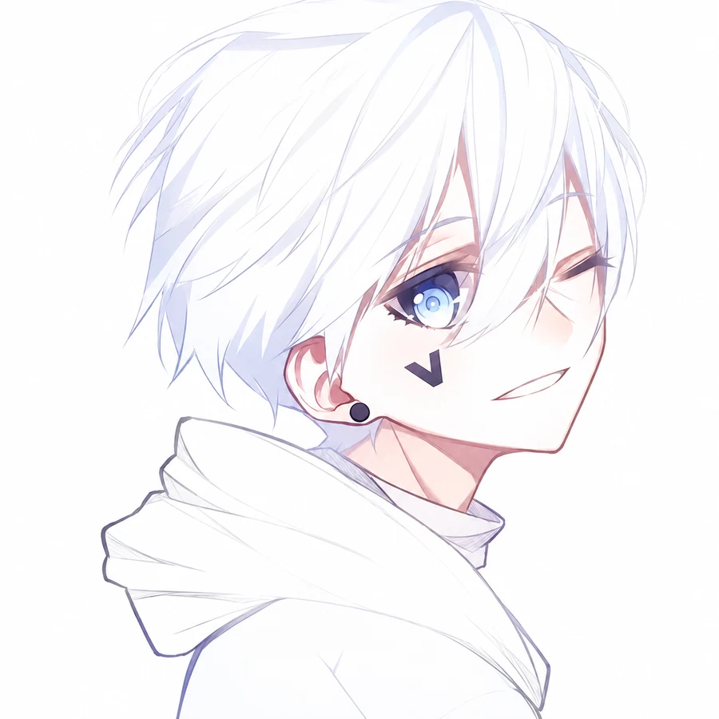

写代码，也看番。这里放我亲手做的开源作品、一些使用心得，还有一只看板娘。全部免费，随便用。
五个全部开源，点卡片看源码和文档。
视频链接扔进去，出来一篇结构化笔记。Windows 可离线跑。
一份 Markdown 母稿，自动排成知乎文章和抖音图文，公式不翻车。
给医生用的：输入一句话，生成能编辑的医学 PPT。
普通 2D 视频，转成能转着看的 3D 场景。
给 VS Code 换背景壁纸，卸载的时候能完整还原。
写代码的。好工具就该免费开放，道理简单，我照着做。
站里推荐的东西我都在用。要是哪天我把哪个工具用崩了，也会回来写篇随笔认错。
欢迎常来。

报告页面 bug、推荐心中的精品工具，或者单纯想聊二次元和代码，邮箱就在下面。